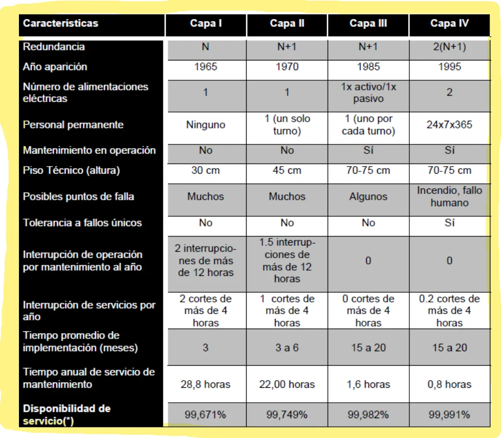

1° parcial, teoría
Estructura de un data center, Tiers, disponibilidad, incendios, energía y PUE.
Resumen no juzgado. Todavía nadie evaluó si alcanza para estudiar solo con esto.
Cómo viene el examen
Hay tres parciales de 2023 en adelante en el Drive, del 04/10/2023, 01/10/2025 y 30/09/2026. Los tres traen 8 preguntas abiertas de 1,25 cada una. Los de 22/09/2022 y 10/10/2018 no entran en la cuenta.
| Tema | En cuántos de los 3 | Exámenes |
|---|---|---|
| MTTR, MTTF, MTBF y disponibilidad, con cuenta | 3 | 2023, 2025, 2026 |
| PUE y DCiE de dos data centers, con cuenta | 3 | 2023, 2025, 2026 |
| Costos ante una amenaza física | 3 | 2023, 2025, 2026 |
| Cañerías de extinción | 2 | 2023, 2026 |
| Métrica de calidad de una UPS | 2 | 2023, 2026 |
| Sensores de humedad | 2 | 2025, 2026 |
| Redundancia N por Tier | 2 | 2023, 2025 |
| Cargas en piso técnico | 2 | 2025, 2026 |
| Capas de Tier y descripción | 1 | 2025 |
| Las tres métricas, describir | 1 | 2025 |
| Detectores por etapa | 1 | 2026 |
| HCFC y HFC, agente más usado | 1 | 2023 |
Qué es un data center
Un data center, o CDP, es un espacio con características físicas especiales de refrigeración, protección y redundancia. El apunte distingue sala de servidores, centro de cómputos y data center. Sus elementos son los racks, la electricidad, la refrigeración, la seguridad física y el cableado. Fuente: apunte 1, Estructura Física, páginas 1 a 3.
La definición completa del apunte dice para qué sirve ese espacio, «cuyo objetivo es alojar todo el equipamiento tecnológico de la Organización brindando seguridad, confiabilidad y asegurando la disponibilidad de los servicios informáticos». Es uno de los principales activos de la organización. Construirlo y operarlo cuesta por metro cuadrado mucho más que una oficina, y por eso el diseño no puede fallar.
La clasificación, según dimensión y prestaciones:
- Sala de servidores: estructura chica, pocos servidores, muy informal.
- Centro de cómputos: dimensión mediana. Puede tener racks y condiciones de seguridad y ambientales básicas.
- Data center: gran dimensión. Todo va obligatoriamente en racks ordenados, con seguridad regulada y controles estrictos eléctricos y ambientales, incluso con sistemas redundantes.
Fuente: apunte 1, Estructura Física, página 1.
Piso técnico
Es un piso elevado de barras de acero y paneles. Por debajo pasan el aire y los cables. El apunte dice que «su función principal es proveer un canal por donde fluirá el aire que refrigerará los equipos y también por donde pasarán los cables». Algunos datos del apunte:
- Pedestales de 4 a 70 cm de alto, con 2 cm de regulación. Se fijan a la carpeta con adhesivo especial, y además con tornillos o clavos.
- El hueco entre el piso real y el piso técnico suele medir de 45 a 70 cm, según cuántos cables lleve el proyecto.
- Placas de 60 x 60. Hay otros tamaños, como 61 x 61 o 70 x 70. Las más recomendables son las de acero.
- Pasillos de 90 a 120 cm, con rampa de acceso.
- Tolerancias de 1 mm entre placas y 2 mm contra las paredes. El piso no se apoya en paredes ni columnas.
- Desnivel aceptado de 1,5 mm en 3 m como máximo, y de 2,5 mm en toda la planta.
Fuente: apunte 1, páginas 3 a 6.
Para instalarlo, el apunte pide esto:
- Un plano o boceto del lugar, para planificar cómo van las baldosas y los cortes en terminaciones, esquinas y columnas.
- La loza o carpeta limpia, libre de contaminantes y totalmente nivelada. Las de cemento pulido son las más recomendables. En obra nueva, el cemento tiene que estar fraguado y seco.
- Niveladores láser y control del nivel durante todo el proceso.
- Un diseño que minimice la cantidad de cortes.
Para calcular la superficie, la cantidad de servidores engaña, porque un servidor puede ser chico u ocupar un rack entero. El apunte dice que el criterio más acertado es el peso, el calor que se va a generar y la potencia eléctrica necesaria. Las unidades de refrigeración y las UPS suelen ir dentro del área de servidores, pero pueden estar en un ambiente contiguo. Fuente: apunte 1, páginas 5 y 6.
Como deben ubicarse las cargas en un piso técnico1° parcial teoría, 01/10/2025 y 30/09/2026
El apunte no usa la palabra «ubicar». Habla de cargas concentradas o puntuales, que son puntos de pequeña superficie que soportan todo el peso. Las patas del mobiliario fijo ejercen una carga puntual más fuerte. Con una superficie de apoyo mayor, el peso se distribuye en una zona más amplia y baja la concentración.
Fuente: apunte 1, Estructura Física, páginas 4 y 5.
Racks
El estándar es EIA-310-D, con racks de 19 pulgadas. Una unidad de altura (1U) mide 1,75 pulgadas, o 44,45 mm. El de 42U es el más popular. Los equipos con hot swap se cambian sin apagar. El procesador puede consumir hasta el 45 % de la energía del equipo. Fuente: apunte 1, páginas 6 a 8.
El apunte define el rack como «un bastidor metálico cuyo fin es alojar equipamiento informático». Su función principal es proteger los equipos, mantenerlos ordenados y seguros, y optimizar el espacio. Las medidas están normalizadas para que sirva cualquier fabricante. Lo que agrega:
- Ancho: el más común es de 19 pulgadas (600 mm). También hay de 23 pulgadas, homologados por EIA-310-D. La distancia horizontal entre las guías es de 18,312 pulgadas, o 465,1 mm.
- Alto: hay de 24U, 30U, 36U, 42U, 44U y 51U. El de 42U es el más popular por su relación costo y beneficio. Los servidores suelen ocupar 1U, 2U o 4U, y un switch de 24 puertos ocupa 1U.
- Agujeros: los de huecos cuadrados son los más populares, porque simplifican la instalación de las guías.
- Guías deslizables o rail kits: el servidor sale hacia adelante como un cajón, sin apagarlo ni mover a los demás. Los cables tienen que ser lo bastante largos.
- Hot swap: hoy la mayoría de las fuentes y de los discos de un RAID se cambian en caliente. Algunos servidores permiten cambiar procesadores o memoria. Siempre se consulta el manual del fabricante.
- Puertas: la de adelante es un panel perforado, como una rejilla, con cerradura, para que entre el aire frío. Atrás tiene que haber lugar para pasar los cables por los laterales sin cortar la salida del aire caliente.
- Zonas sísmicas: se refuerzan los vértices con una chapa angular.
- Racks abiertos: son marcos, de dos o de cuatro postes, y no tienen todas las prestaciones de un rack. Los de cuatro postes se usan muy poco.
Fuente: apunte 1, Estructura Física, páginas 6 a 8.
Los equipos de comunicaciones, como routers, switches y firewalls, procesan poco, consumen poco y generan poco calor. Los servidores consumen más y generan más calor, y el procesador es el componente que más consume. La eficiencia de las fuentes subió del 72 % en 2003 al 79 % en 2006 y al 90 % o más en 2012. Algunos servidores se apagan solos si pasan el límite del fabricante, en general entre 40 y 45 °C. Fuente: apunte 1, páginas 8 y 9.
Sensores
Describa la ubicación ideal de los sensores de humedad en los racks del Datacenter1° parcial teoría, 01/10/2025 y 30/09/2026
Van en los pasillos fríos. El apunte dice «colocar un sensor de humedad por fila en la parte frontal del Rack a la mitad de la fila».
Fuente: apunte 1, Estructura Física, página 9.
Los otros sensores, en la misma página:
- Temperatura: al frente de los racks, entre 1,40 y 1,70 m de altura. Atrás, uno cada 5 racks.
- Líquidos: en el piso, cerca de las fuentes de agua.
Lo que completa el apunte sobre el monitoreo ambiental, en las páginas 9 y 10:
- Para qué sirve: prevenir una falla o atacarla antes de que los usuarios se den cuenta. Lo fundamental es la proactividad y definir bien los umbrales que disparan las alertas a las personas indicadas.
- Humedad: los sensores van en los pasillos fríos, lo bastante separados entre sí como para tomar muestras en distintos puntos.
- Líquidos: cerca de las posibles fuentes de fuga, como las unidades de refrigeración o las cañerías.
- Puertas: en todas las que dan acceso al data center, aunque ya haya acceso restringido. También en los racks, o al menos en los críticos.
- Red: los sensores se consultan por TCP/IP y la información se junta en una consola. También hay sensores inalámbricos, más fáciles y baratos de instalar.
- Software: tiene que ser escalable, ubicar e identificar cada sensor y avisar por varios medios, como SNMP, correo o HTTP Post. Además tiene que poder conectarse con otras consolas de monitoreo.
- Recolección: conviene tener varios puntos de recolección distribuidos, con alertas en cada uno, en vez de mandar todo a un solo punto central. Así no hay un punto único de falla.
- Umbrales: se definen de forma centralizada y se pueden cambiar según la situación, por ejemplo con el cambio de estación.
Tiers
Antes conviene tener clara la letra N. Si hacen falta tres generadores, el apunte cuenta así:
| Configuración | Generadores |
|---|---|
| N | 3 |
| N+1 | 4 |
| N+2 | 5 |
| 2N | 6 |
| 2N+1 | 7 |
Fuente: apunte 1, página 12.
La definición del apunte es «N es la necesidad de la carga crítica o el requerimiento mínimo para operar de forma normal». Vale para todo, sea equipamiento eléctrico, refrigeración o extinción de incendios. En 2N+1, seis generadores mantienen toda la infraestructura duplicada y uno queda de repuesto para una contingencia. Cuantos más sistemas redundantes, más sube el costo, como mínimo en proporción. Fuente: apunte 1, página 12.
Dos reglas generales de las capas:
- A mayor número de capa, mayor disponibilidad y mayor costo de construcción.
- Cada capa cumple los requisitos de las anteriores. Un data center de Capa IV cumple todo lo de las Capas III, II y I.
Fuente: apunte 1, página 12.
De acuerdo al Tier o número de capa, indique qué configuración de redundancia en función de N aplica1° parcial teoría, 04/10/2023 y 01/10/2025
La tabla del apunte da N para el Tier I, N+1 para el II, N+1 para el III y 2(N+1) para el IV.
Fuente: apunte 1, Estructura Física, página 16.
La clasificación de centro de datos en Tiers: en cuántas capas se divide, describa brevemente cada una1° parcial teoría, 01/10/2025
Son cuatro capas.
- Capa I, básico. Sin redundancia y con varios puntos únicos de falla. Sale de servicio al menos una vez al año por mantenimiento. Carga máxima del 100 %.
- Capa II, componentes redundantes. Diseño N+1, con piso falso, UPS y generadores, conectado a una sola línea de distribución.
- Capa III, mantenimiento concurrente. Doble línea de distribución. Carga máxima del 90 %.
- Capa IV, tolerante a fallas. Dos líneas activas y dos UPS independientes, cada una N+1. Tiene EPO, el corte de emergencia.
Fuente: apunte 1, Estructura Física, páginas 12 a 15.
Lo que el apunte agrega de cada capa:
- Capa I: puede sufrir interrupciones planeadas y no planeadas. Tiene aire acondicionado y distribución de energía, pero puede tener o no piso técnico, UPS o generador. Si los tiene, pueden no ser redundantes. Una urgencia puede obligar a paradas más frecuentes, y un error de operación o una falla detiene el data center.
- Capa II: es «ligeramente menos susceptible» a interrupciones. Su diseño es «lo necesario más uno» (N+1), o sea, al menos un sistema de contingencia por componente. La carga máxima en situaciones críticas es del 100 %. El mantenimiento de la línea de distribución u otros componentes puede interrumpir el procesamiento.
- Capa III: permite cualquier actividad planificada de mantenimiento sin interrumpir la operación. Planificadas son el mantenimiento preventivo y programado, las reparaciones o reemplazos, agregar o quitar elementos y las pruebas. Con doble línea, una se mantiene mientras la otra lleva toda la carga. Las actividades no programadas, los errores de operación y las fallas inesperadas todavía pueden interrumpirlo. Muchos se diseñan para pasar a Capa IV más adelante.
- Capa IV: además de lo anterior, sigue operando ante un evento crítico no planificado. Las dos líneas activas van en configuración «sistema» + «sistema». La carga máxima en situaciones críticas es del 90 %, y sigue habiendo cierta exposición a fallas. La única parada prevista es la activación de un EPO, una vez cada cinco años.
Algunas organizaciones piden «cinco nueves», o sea 99,999 % de disponibilidad. En la historia, la Capa I aparece en los sesenta, la II en los setenta, la III a fines de los ochenta y principios de los noventa, y la IV hacia 1995. Fuente: apunte 1, Estructura Física, páginas 12 a 15.
La tabla del apunte junta todo lo demás:

| Tier I | Tier II | Tier III | Tier IV | |
|---|---|---|---|---|
| Redundancia | N | N+1 | N+1 | 2(N+1) |
| Alimentaciones | 1 | 1 | 1 activa y 1 pasiva | 2 |
| Personal | Ninguno | 1 en un turno | 1 por turno | 24x7x365 |
| Mantenimiento en operación | No | No | Sí | Sí |
| Piso | 30 cm | 45 cm | 70 a 75 cm | 70 a 75 cm |
| Tolerancia a fallos únicos | No | No | No | Sí |
| Disponibilidad | 99,671 % | 99,749 % | 99,982 % | 99,991 % |
El apunte da dos valores para la Capa IV
El texto de la página 14 dice 99,995 % y la tabla de la página 16 dice 99,991 %. Preguntá cuál se toma.
Métricas de disponibilidad
Describa las tres métricas de disponibilidad estudiadas1° parcial teoría, 01/10/2025
- MTTF (mean time to failure): tiempo medio hasta que se produce un fallo.
- MTTR (mean time to repair): tiempo medio que se tarda en poner de nuevo en marcha el sistema.
- MTBF (mean time between failures): tiempo medio entre fallos.
Fuente: apunte 4, Métricas de Disponibilidad, página 1 del PDF.
Las fórmulas del apunte 4:
El apunte arma las tres a partir de un gráfico. F es el momento en que el dispositivo falla y R el momento en que vuelve a estar disponible. Cada intervalo tiene su nombre:
- TTR (time to repair): el tiempo que hace falta para volver a poner en marcha el sistema.
- TTF (time to failure): el tiempo que pasa hasta que falla.
- TBF (time between failures): el tiempo entre fallos.
Las métricas con M son el promedio de cada uno. La disponibilidad sale de dos formas, y las dos dan lo mismo en el ejemplo del apunte:
El apunte llama a la segunda «quizás más intuitiva». El tiempo total va en la misma unidad que las caídas, por eso convierte los meses a minutos con meses de 30 días. Fuente: apunte 4, Métricas de Disponibilidad, páginas 1 y 2 del PDF.
Es la consigna más repetida, junto con PUE y costos. Te dan cuántas caídas hubo, en cuántos meses y cuánto duró cada una. Las cuentas no se resuelven acá. Practicala con el examen de 2026 y seguí el ejemplo de abajo.
Un servidor con 5 caídas en 3 meses
Tres caídas duraron 5 minutos, una 30 y otra 40. El apunte toma el mes de 30 días.
- Tiempo total: 129600 minutos.
- Inactividad: 85 minutos.
- Funcionamiento correcto: 129515 minutos.
- MTTR = 85 / 5 = 17 minutos.
- MTTF = 129515 / 5 = 25903 minutos.
- MTBF = 129600 / 5 = 25920 minutos.
- Disponibilidad = 129515 / 129600 = 99,93 %.
Apunte 4, Métricas de Disponibilidad, página 1 del PDF
Cuánto puede estar caído un equipo con cinco nueves
El apunte dice que el mayor nivel de exigencia son los cinco nueves, 99,999 %. El método es pasar el período a minutos y quedarse con lo que sobra.
- Un mes de 30 días tiene 43200 minutos. El 99,999 % de eso es 43199,568 minutos funcionando. Quedan 0,432 minutos, o sea 25,92 segundos, de caída por mes como máximo.
- Un año tiene 525600 minutos. El 99,999 % es 525594,74. Quedan 5,25 minutos de caída por año como máximo.
Apunte 4, Métricas de Disponibilidad, página 2 del PDF
El apunte 1 define distinto el MTTF
La página 16 del apunte 1 llama a MTTF «tiempo medio entre fallas». El apunte 4 le da ese nombre a MTBF. Para las cuentas usá las fórmulas del apunte 4, que son las que tienen ejemplo.
El apunte 1 describe las otras dos con otras palabras. MTBF «nos indica el tiempo promedio en el cual se tiene alta probabilidad de otra falla después de que haya ocurrido una anterior». Al MTTR lo llama Mean Time To Recover, «el tiempo promedio que se requiere desde que el sistema falla hasta su completa recuperación». Fuente: apunte 1, Estructura Física, página 17.
Disponibilidad real
El apunte 1 advierte que el tiempo de interrupción no es lo inverso del tiempo de disponibilidad. También cuenta el tiempo de recuperación y testeo, que muchas veces supera a la interrupción real.
Un servidor que se reinicia solo
El servidor tarda 5 minutos en volver. La base de datos que corre ahí tarda 10 minutos más en estar online. El administrador de la base tarda otros 10 minutos en verificar los datos. La interrupción fue de 25 minutos, así que la disponibilidad real del servicio ese día fue de 23:30 horas, no de 23:55.
Apunte 1, Estructura Física, página 17
Errata del apunte en ese ejemplo
El apunte escribe 23:30 horas. Pero 24 horas menos 25 minutos dan 23:35. La idea no cambia. La caída de 5 minutos le costó 25 al servicio.
Costos ante una amenaza física
El apunte separa las causas de una interrupción importante en dos grupos:
- Desastres naturales: huracanes, inundaciones, terremotos, tornados, incendios y tsunamis.
- Causadas por el hombre: sabotajes, fallas humanas, fallas en el suministro eléctrico y fallas en la red, entre otras.
Fuente: apunte 2, Seguridad e Incendios, página 1.
Ante la ocurrencia de una amenaza física hay costos asociados que pueden ser tipificados, cuál es la clasificación1° parcial teoría, 04/10/2023, 01/10/2025 y 30/09/2026
- De oportunidad: las utilidades que se pierden por no estar disponibles.
- Directos: influyen directamente en las finanzas y son fáciles de medir. Por ejemplo, empleados esperando, transacciones, recuperación, testeo y demandas.
- Indirectos: se sabe que existen, pero son difíciles de medir. Por ejemplo, satisfacción, clientes perdidos, imagen y relaciones públicas.
Fuente: apunte 2, Seguridad e Incendios, página 2.
El apunte también da una fórmula de costo de interrupción, Costo = P x A x E x H. P son las personas afectadas, A el porcentaje medio de afectación, E el costo de la hora y H las horas.
Errata en el ejemplo del apunte
El ejemplo usa P = 8, A = 100, E = 60 y H = 5, y llega a $240 000. Si A es un porcentaje, el 100 % debería valer 1 y no 100. Fuente: apunte 2, páginas 2 y 3.
En el ejemplo, una falla eléctrica deja sin sistema la línea de cajas de un banco. P son los 8 cajeros que trabajaban, y A vale el 100 % porque sin sistema no pueden operar. H suma lo que tarda en volver la corriente y lo que tarda el administrador en restablecer el servicio. El apunte recomienda arrancar juntando datos estadísticos de las interrupciones pasadas y de cuánto duraron. Fuente: apunte 2, página 2.
Seguridad física
Lo que pide el apunte 2, en las páginas 3 y 4:
- Acceso: solo entra quien tiene que hacer una tarea que no se puede hacer de forma remota. Esas personas tienen que entender la importancia del equipamiento, para evitar fallas por falta de entrenamiento.
- Cámaras o CCTV: son medidas reactivas, no preventivas, porque no evitan el incidente, aunque a veces disuaden. Tienen que permitir identificar a las personas y cubrir la mayor superficie posible, las puertas y las zonas críticas. Hace falta una política clara de cómo se catalogan las grabaciones, dónde se guardan, quién accede, con qué procedimiento y por cuánto tiempo se conservan.
- Personal de seguridad: calificado, entrenado y con procedimientos claros. Por ejemplo, acompaña a un técnico que entra a un área crítica.
- Sensores para el personal de seguridad: láser barrera, de pisada, de contacto o de vibraciones.
- Visitantes: se registran al entrar y al salir, con nombre, fecha, hora y motivo. Saltear el procedimiento con una cara conocida puede ser catastrófico.
- Robo de información: se documenta qué elementos de transferencia de información pueden entrar o salir, y quiénes están autorizados.
- Balance entre riesgo y costo: el equipamiento de seguridad, su mantenimiento y los sueldos del personal tienen que estar en equilibrio con el valor de la información que se protege.
- Seguridad lógica: no es tarea de la administración del data center, pero no se deja de lado. Las amenazas digitales afectan la confidencialidad, la integridad y la disponibilidad de la información. Entre ellas están los hackers, los virus y los cuellos de botella en las redes.
Fuente: apunte 2, Seguridad e Incendios, páginas 3 y 4.
Detección de incendios
Mencione la clasificación de detectores de incendio según la etapa en que se encuentra el evento1° parcial teoría, 30/09/2026
- Pre combustión: el fuego empieza a originarse y todavía no se ve. Lo detectan sensores de alta sensibilidad con tecnología CCD.
- Humo visible: aparecen indicios de humo.
- Fuego con llamas: ya aparecen las llamas. Los detectores térmicos del mercado no se recomiendan para data centers.
- Calor intenso: después de varios minutos, las llamas toman temperatura elevada y es muy difícil de controlar.
Fuente: apunte 2, Seguridad e Incendios, página 5.
Lo que el apunte agrega de cada etapa y de los detectores:
- CCD quiere decir Cloud Chamber Detection, detector de cámara de niebla. Detecta partículas de hasta 0,002 micrones.
- Humo visible: el detector nota el humo en el aire por la absorción o la difusión de la luz.
- Dónde poner la plata: «Si la idea es proteger la información, no tiene sentido gastar dinero en un sistema de detección de llamas, porque ya será demasiado tarde». Los esfuerzos van a las dos primeras etapas. Lo mismo vale para el calor intenso.
- Mantenimiento: los detectores de humo se prueban al menos cada seis meses y se limpian de polvo y suciedad. La limpieza, la verificación y el ajuste de sensibilidad se hacen según el fabricante, y la sensibilidad normalmente se ajusta en laboratorio.
- Dónde no van: donde puedan dar falsas alarmas o tengan vibraciones. Sirven con aire de hasta 5 m/s. En los ductos de recirculación tienen que recibir suficiente humo para activarse.
Fuente: apunte 2, Seguridad e Incendios, páginas 5 y 6.
La central de detección recibe los datos de los sensores y dispara alarmas y extinción. Va conectada a la UPS y puede dividir el data center en zonas. Fuente: apunte 2, página 4.
El apunte la define como uno de los elementos fundamentales, «por ser un punto concentrador de información». Recibe los datos de los sensores de humo o térmicos y activa la extinción y las alarmas, como sirenas, alertas a celulares o a consolas de monitoreo. Con zonas, descarga el agente solo en el área afectada. Es chica, de unos 20 x 30 x 5 cm, y va en la pared, en el centro de monitoreo o fuera del data center antes de la puerta principal, por el riesgo que puede tener el agente para las personas. Tiene que tener activación y desactivación manual. Fuente: apunte 2, página 4.
Acciones preventivas
- Conviene que el data center esté aislado de otros edificios.
- No se fuma en las instalaciones.
- Los desperdicios se sacan enseguida.
- Los muebles son metálicos.
- No conviene usar material acústico, porque en general es inflamable.
- Se hacen inspecciones oculares para encontrar material inflamable.
- Debajo del piso técnico se junta basura y a veces se guardan materiales. Se inspecciona periódicamente, a cargo de alguien cuya prioridad sea la protección contra incendios.
- Los papeles y cintas se reducen al mínimo. Los registros importantes se duplican en una ubicación remota, y se guardan en gabinetes metálicos con llave. Las bibliotecas de cintas tienen su propio sistema de extinción.
- Lo que está en depósito para usar en el futuro se etiqueta. Los cables abandonados se sacan, porque su aislamiento puede largar humo con partículas gruesas que corroen los equipos.
- Hay alarmas sonoras y visuales para prevenir pérdidas humanas y poner en alerta al personal.
Fuente: apunte 2, Seguridad e Incendios, páginas 4 y 5.
Extinción
Los agentes gaseosos del apunte son cinco grupos:
- CO2.
- Halones, discontinuados en 1994.
- Inertes, como IG-01, IG-55 e IG-541.
- HCFC.
- HFC.
Fuente: apunte 2, páginas 6 a 8.
Cómo funciona la extinción por gas
Se basa en eliminar el oxígeno. El agente gaseoso baja el porcentaje de oxígeno del aire hasta cortar la cadena de combustión. Funciona bien en áreas cerradas. Los pasos del apunte:
- Los sensores detectan el incendio y avisan a la central dónde se genera.
- La central abre la válvula de los tanques.
- El gas viaja por las cañerías de los pasillos hasta los picos difusores, ubicados para cubrir toda la superficie.
Los tanques guardan gas a muy alta presión, así que van en zonas aisladas y no transitadas. Al diseñar se tienen en cuenta el volumen del área, el equipamiento que se protege, el lugar para los tanques y el agente elegido, porque según el agente hacen falta más o menos tanques. Fuente: apunte 2, página 6.
Cada agente gaseoso
- CO2: se usa hace unos 80 años. Es más pesado que el aire y al salir forma niebla, que baja la visión. Es tóxico en cierta concentración y puede matar, por eso algunos países lo prohíben en áreas ocupadas. Tiene el mejor efecto extintor de todos los gases inertes, no conduce electricidad ni deja residuos. Se almacena cerca de la zona y su recarga es barata, pero necesita más tubos que otros agentes para la misma superficie.
- Halones: son flúor, cloro, bromo y yodo combinados con carbono. Los modernos, como el Halón 1301, 1211, 1202 y 2402, dañaban la capa de ozono, y en 1994 se discontinuó su producción. El flúor quedó como sucesor por su volatilidad, estabilidad, baja toxicidad y poder de extinción.
- Inertes: casi no reaccionan con otros elementos. El argón se obtiene separando oxígeno y nitrógeno del aire. No es tóxico, no deja residuos, se saca con ventilación y permite poner los tanques lejos de la zona. Se adapta a una instalación de halón, su costo es moderado, es seguro para las personas y no daña el ozono. Las mezclas son IG-01 (Ar 100 %), IG-55 (Ar 50 % y N2 50 %) e IG-541 (Ar 40 %, N2 52 % y CO2 8 %).
- HCFC: se basan en flúor, con hidrógeno, cloro y carbono. Son el HCFC-124, la mezcla A, el HCFC-22 y el HCFC-123. Son seguros en áreas ocupadas, no dejan residuos, no conducen ni corroen. Descargan en 10 segundos o menos a no más de 5 m, y el agente se guarda muy cerca de la zona.
- HFC: los tipos son HFC-227ea, HFC-125, HFC-23, HFC-236fa y FK-5-1-12, con los mismos elementos en distintas proporciones.
Fuente: apunte 2, Seguridad e Incendios, páginas 7 y 8.
Los extintores portátiles van en un lugar estratégico, de fácil acceso y señalizado. El HFC-236fa, vendido como FE-36, es el reemplazo ideal del Halón 1211. Son rápidos de instalar, baratos, fáciles de usar, seguros para las personas, y no dejan residuos ni conducen electricidad. Fuente: apunte 2, página 8.
Qué diferencia hay entre los extintores HCFC y HFC, cuál es el más adecuado para tecnología y por qué1° parcial teoría, 04/10/2023
El HCFC tiene flúor y cloro, y extingue por absorción de calor. Está en desuso por el cloro. El HFC es similar, pero sin cloro. El apunte da al HFC-227ea como el más usado en IT para data centers, por su alta eficacia con una concentración baja.
Fuente: apunte 2, Seguridad e Incendios, página 8.
Describa el tipo de agente extintor más utilizado e indique un nombre comercial1° parcial teoría, 04/10/2023
El HFC-227ea, que DuPont vende como FM-200®.
Fuente: apunte 2, Seguridad e Incendios, página 8.
Extinción con agua
El apunte avisa que puede ser poco práctica, porque probablemente dañe los equipos que se quieren proteger. Fuente: apunte 2, página 8.
Según la forma en que la cañería de extinción transporta el agua, cuáles son los tipos, descríbalos1° parcial teoría, 04/10/2023 y 30/09/2026
- Mojada: es la más común. Está llena de agua, que sale apenas se activan los rociadores. Tiene riesgo de goteras y puede subir la humedad.
- Seca: cargada con aire comprimido y nitrógeno. El agua empuja el aire y después sale por los rociadores.
- Pre acción: usa cañería seca y un tablero que hace de doble control. Verifica por segunda vez si hay incendio. Es la altamente recomendada para data centers.
Fuente: apunte 2, Seguridad e Incendios, página 8.
Sobre los rociadores, el apunte agrega esto:
- Rociadores: están pensados para proteger la estructura del edificio y no se recomiendan para data centers. Se los encuentra donde un organismo regulador los exige. Se activan entre 74 y 79 °C, rango que se puede cambiar.
- Rociadores finos o mist: largan un rocío muy fino que apaga el fuego absorbiendo calor, y el vapor bloquea el oxígeno. Así atacan dos de los tres lados del triángulo de fuego. Usan poca agua y mojan la menor superficie posible, por eso son cada vez más comunes.
- Si el edificio no exige rociadores: la alternativa es un agente limpio gaseoso.
- Si no se puede permitir ninguna interrupción: se instalan los dos. El gas actúa primero y los rociadores quedan como segunda alternativa. El gas casi no falla, salvo que esté mal instalado o que alguien deje las puertas abiertas.
- Debajo del piso elevado: puede ir rociador, CO2 o agente inerte. Si el hueco es muy bajo para el rociador, va gas. Si se usa CO2, la descarga es de baja velocidad, para que no suba más allá de la rodilla y deje evacuar.
Fuente: apunte 2, Seguridad e Incendios, páginas 9 y 10.
Alimentación eléctrica
El data center tiene que seguir funcionando sin interrupción y de forma transparente para los usuarios, pase lo que pase afuera. El primer paso es definir el consumo eléctrico, contando el crecimiento futuro. Cambiar la estructura eléctrica con el data center funcionando puede costar diez veces más que hacerlo bien en el diseño. Fuente: apunte 3, Alimentación Eléctrica, página 1.
Los elementos eléctricos del apunte:
- Transformadores: suben o bajan el voltaje. Si es muy grande puede necesitar su propia conexión a tierra. Suele ir fuera del data center, porque genera calor y es un foco de incendio potencial.
- Tablero eléctrico principal: recibe el flujo que entra desde la red del proveedor. Da información y subdistribuye la energía hacia adentro.
- Subpaneles (circuit breaker): distribuyen en áreas grandes y permiten hacer mantenimiento sin cortar el suministro. Soportan de 480 V a 120 V.
- PDU (Power Distribution Unit): distribuye la energía. También baja voltaje y amperaje a niveles más útiles, por ejemplo de 220 V 30 A monofásica a enchufes de 110 V 15 A o 20 A.
- Cables: llevan la corriente desde el panel principal, los transformadores, los subpaneles y las PDU.
- Tomas y fichas: conectan los equipos en cada rack. Cambian según las regulaciones de cada país, el voltaje y el amperaje.
Fuente: apunte 3, página 1.
Para elegir la alimentación se tienen en cuenta el tamaño del data center, la naturaleza de los equipos, el tipo y la calidad de la red de la zona, el presupuesto y el costo del kWh. Al proveedor le sale más barato dar corriente a mayor tensión. Para una distribución optimizada, conviene que el transformador esté integrado en la PDU. En instalaciones medianas o chicas, algunas PDU traen la UPS integrada. Fuente: apunte 3, página 2.
220 V y doble alimentación
- 220 V en vez de 110 V: para la misma potencia la corriente es la mitad. Eso ahorra conductores y mejora la eficiencia. El riesgo eléctrico es apenas mayor y los requisitos de puesta a tierra son iguales. El ejemplo del apunte es una UPS de 20 A, que soporta cuatro servidores a 110 V y ocho a 220 V, ocupando lo mismo y generando casi el mismo calor.
- Medidas de control: conviene saber el consumo en kVA de cada rack y de cada fila de racks, para elegir la PDU, y los kVA por metro cuadrado de todo el data center.
- Dos fuentes por equipo: si falla una PDU, el equipo crítico sigue. Cada fuente se conecta a una alimentación distinta del fondo del rack, una del lado izquierdo y otra del derecho, y cada una sale de otra PDU. Esta conexión funciona bien en ambientes chicos. Su desventaja es que cruza muchos cables entre las unidades y los racks, y puede obstruir el aire bajo el piso técnico. No se recomienda en data centers grandes.
- Una PDU por fila: va en la cabecera o en el medio de la fila y alimenta a su fila y a la siguiente. Las PDU quedan entrecruzadas, y cada rack recibe dos fuentes. Así se puede hacer mantenimiento sin apagar los equipos.
Fuente: apunte 3, páginas 3, 4 y 11.
UPS
La definición del apunte es «Un UPS (Uninterruptible Power Supply) o en español SAI (Sistema de Alimentación Ininterrumpida) es una fuente de suministro eléctrico que es alimentada por una batería cuyo fin es seguir dando energía a dispositivos de misión crítica en el caso de interrupción eléctrica, con un tiempo de respuesta < a 250 milisegundos». Permite usar los servidores varios minutos durante un corte. Además mejora la calidad del suministro, porque estabiliza la energía entrante, aísla la fuente normal, filtra, corrige la forma de onda y la frecuencia de línea, y protege los equipos. Fuente: apunte 3, Alimentación Eléctrica, página 4.
A la hora de evaluar una UPS, cuál es la métrica que indica una mejor calidad y cómo se calcula1° parcial teoría, 04/10/2023 y 30/09/2026
El apunte dice que un concepto muy importante para evaluar una UPS es la eficiencia. Es el cociente entre la salida y la entrada de energía, en porcentaje. Mientras mayor sea, más conveniente.
Fuente: apunte 3, Alimentación Eléctrica, página 5.
Eficiencia de una UPS
Entran 100 kW y salen 90 kW, así que la eficiencia es 90 %. Los 10 kW perdidos, por 24 horas y 365 días, son 87 600 kWh por año.
Apunte 3, Alimentación Eléctrica, página 5
El apunte aclara por qué importa. La eficiencia nunca es del 100 %, porque los componentes internos consumen, como transformadores, placas, rectificadores e inversores. Lo perdido se va en calor u otras transformaciones. En el ejemplo, con el kWh a 3 dólares, los 87 600 kWh son 262 800 dólares por año. Fuente: apunte 3, página 5.
Topologías de UPS
Son cuatro, y cambian en costo y disponibilidad. El apunte las compara con una carga de IT de 600 kW y módulos de 200 kW:
| Topología | Qué hace | Módulos para 600 kW |
|---|---|---|
| Capacidad normal (N) | Soporta la carga actual por un tiempo limitado. Es la más económica, pero no responde a ninguna falla de la UPS, y su mantenimiento arriesga una interrupción. Para ambientes chicos | 3 |
| Redundancia paralela aislada (N) | Como la anterior, pero con módulos de distintos fabricantes. Da flexibilidad al comprar, y complica y encarece instalación, monitoreo y mantenimiento. Para ambientes medianos | 2 de un proveedor y 1 de otro |
| Redundancia paralela (N+1) | Un módulo adicional tolera la falla de un solo módulo y permite mantenimiento sin cortar el servicio. Es la más usada en data centers. Para ambientes medianos | 4 |
| Redundancia doble (2N) | El doble de la capacidad total. Si falla un sistema entero de UPS, el otro soporta toda la carga. Es la más robusta y la más cara | 6 |
Fuente: apunte 3, Alimentación Eléctrica, página 5.
Batería e inversor
Están en todos los tipos de UPS.
- Batería: guarda la energía y la entrega en un corte. Su capacidad se mide en amperes por hora. La UPS se calcula para una autonomía de 5 a 15 minutos. Guarda la energía en corriente continua, así que hay que convertirla a alterna para los equipos.
- Inversor: pasa la continua de las baterías a alterna para la salida de la UPS. También hace lo inverso para cargar las baterías.
- Temperatura: lo recomendado son 20 °C. La vida útil normal de la batería es de 5 años. Si trabaja siempre a 30 °C, dura un 50 % menos. La relación no es lineal, y a 40 °C la vida útil queda en el 20 %. Por eso las baterías van en un ambiente de temperatura controlada.
Fuente: apunte 3, página 6.
Los tipos de UPS del apunte:
- Off-line o stand-by.
- On-line de línea interactiva.
- Conversión doble: la más común en data centers, por su confiabilidad y calidad.
- Conversión delta: de mejor eficiencia que la doble, según el apunte.
Fuente: apunte 3, páginas 6 a 8.
Cómo funciona cada una, según el apunte:
- Off-line, stand-by o pasivas: en modo normal la red alimenta los equipos, y una parte chica pasa por el cargador a la batería. Si se corta la red, la batería alimenta y el inversor pasa de continua a alterna. Se usa en instalaciones chicas, monofásicas, con autonomía reducida.
- On-line, línea interactiva o activas: el inversor está conectado a la red porque hace una doble conversión constante. La corriente pasa siempre por el rectificador, que carga la batería y alimenta al inversor. En un corte, las baterías alimentan al inversor y la salida no se interrumpe ni milisegundos. Es común en instalaciones medianas.
- On-line de conversión doble: un rectificador pasa de alterna a continua y carga la batería, y un inversor vuelve a alterna para mantener el flujo constante. Tiene buen desempeño, pero mucho desgaste de componentes. Se usa en data centers grandes.
- On-line de conversión delta: es una tecnología propietaria de APC, de 1995. El transformador delta alimenta la entrada del inversor y aprovecha solo la diferencia entre la energía de la red y la de la batería. Así es más eficiente y se desgasta menos. En un TCO a 10 años con una configuración 2N de 300 kVA, el apunte la da un 58 % más económica que la de conversión doble.
Fuente: apunte 3, Alimentación Eléctrica, páginas 6 a 8.
Cómo elegir y mantener una UPS
El apunte advierte que muchos fabricantes dan la capacidad en VA, o sea potencia aparente, que puede ser alrededor del 60 % de la potencia real. Una UPS de 1 kVA da unos 600 W, y no alcanza para un servidor de 800 W, que se apaga. Los factores para elegir:
- Calcular el costo del impacto de una interrupción, para saber cuánto invertir. De eso dependen la disponibilidad pedida, el tipo de UPS y la topología.
- Poner caminos redundantes entre el banco de baterías y la unidad de distribución.
- Pedir las curvas de eficiencia de los fabricantes y tomar la eficiencia como factor clave.
- Tener en cuenta que la eficiencia baja cuando baja la carga. Los datos tienen que venir según la carga, en general al 25, 50, 75 y 100 %, y no como un único valor a carga máxima.
- Elegir una estructura modular que permita crecer.
- Preguntarse la vida útil y el costo de reposición de las baterías, si los equipos tienen doble fuente y si hace falta doble cableado para todos o solo para algunos.
- Elegir la tecnología de distribución más eficiente para la zona y los equipos que ya hay.
Fuente: apunte 3, página 9.
Para alargar su vida útil, el apunte pide estudiar la curva de eficiencia del fabricante y las pérdidas en las conversiones de alterna a continua y al revés. El mantenimiento preventivo es de dos clases, de unas dos horas como máximo por sistema:
- Rutinario: revisar alarmas, análisis térmico, inspección de cables y conectores por corrosión, medir parámetros del sistema y de las baterías, limpiar filtros, gabinetes y ventiladores, reajustar conexiones y hacer un reporte. Si una UPS está 10 °C por encima de lo esperado, se toman medidas correctivas.
- Con paro total: limpieza interna, revisión de herrajes, cables, motores, ventiladores y componentes de potencia, medición de voltaje por celda de las baterías, y pruebas de sincronía, transferencia, corte de entrada y autonomía. Después se pone el sistema en línea con la carga crítica. Para mover una UPS montada en un rack, primero se vacía toda su carga, para evitar una descarga accidental.
La vida útil de la UPS se estima en diez años, y la de las baterías en cuatro o cinco. Conviene cambiar todas las baterías juntas, para que todas tengan el mismo esfuerzo y simplificar el control. Fuente: apunte 3, páginas 10 y 11.
Otros datos del mismo apunte:
- La batería da de 5 a 15 minutos, y conviene a 20 °C. A más temperatura, dura menos.
- La UPS responde en menos de 250 ms.
- Conviene alimentar con 220 V, y cada equipo con dos fuentes.
- 1 kVA equivale a unos 600 W.
- El generador arranca en 10 a 15 segundos, con un ATS que hace el cambio.
- El tanque de combustible debe dar 60 horas, y 96 horas para algunas certificaciones.
Fuente: apunte 3, páginas 3, 4, 6, 9, 13 y 15.
Generadores
Son sistemas de contingencia. Si se corta la red, siguen dando electricidad al data center, y forman parte del diseño a la hora de elegir la UPS. Transforman la energía mecánica de la combustión en energía eléctrica. Según el apunte, los cortes de suministro causan el 31 % de las interrupciones en data centers, el 45 % de las pérdidas masivas de datos y el 33 % de las fallas de hardware. Fuente: apunte 3, Alimentación Eléctrica, página 11.
Son muy caros. Arrancan en 300 000 dólares para hasta 2000 kW, y los más grandes cuestan millones. Su vida útil es de 20 a 30 años, con repuestos y mantenimiento que suman. Además pueden tardar en llegar o en instalarse, y los proveedores tienen poco stock. Por eso elegir bien es parte fundamental del diseño. Fuente: apunte 3, página 11.
Sus elementos
- Motor principal a combustible: de cuatro tiempos, en general a diésel o gas. El combustible depende de la ubicación y del acceso.
- Alternador: convierte la energía mecánica en eléctrica. Transforma el movimiento rotatorio en corriente alterna por inducción electromagnética, como en un auto.
- Regulador de velocidad: mantiene las RPM del motor y estabiliza la frecuencia de salida. A más RPM, más electricidad. Si hay varios generadores, todos se sincronizan a las mismas RPM, para no sobrecargar la red ni recalentar uno.
- Regulador de voltaje: va a la salida y da el voltaje correcto, sin picos que dañen la instalación.
Las fluctuaciones de frecuencia son normales mientras el regulador de velocidad ajusta. Por eso hace falta monitorear RPM, voltaje, temperatura, niveles de fluidos y alarmas. Fuente: apunte 3, páginas 11 a 13.
| Combustible | Ventajas | Desventajas |
|---|---|---|
| Diésel | Fácil de almacenar, pocos problemas si se guarda mucho tiempo, menos amenaza de fuego, más horas de operación | Daño ambiental, cuesta arrancar con frío |
| Gas | Limpio, menos emisiones, menor costo de mantenimiento y menor riesgo | Costo inicial alto, tamaño limitado, pocos proveedores, pueden cortarlo en una emergencia, fugas explosivas |
| Gasolina | Fácil de conseguir, arranca más rápido que el diésel con frío | Alto riesgo de incendio al almacenarla, y guardarla le hace mal al generador |
Fuente: apunte 3, página 12.
Lo que más falla
El apunte dice que es fundamental mantener la batería de arranque del generador. Estadísticamente, los generadores que no arrancan bien son la principal causa de fallas eléctricas. También se cambian los filtros de aire y de combustible. Fuente: apunte 3, página 12.
ATS y tiempos
El ATS, o switch de transferencia automática, cambia el origen de la energía cuando se corta la red. Todos los del mercado responden en menos de un segundo, y van desde menos de 600 V hasta 35 kV. Desde que se detecta la falla hasta que el motor da energía estabilizada, lo ideal son diez a quince segundos. Los más modernos tardan menos de seis, y menos de un minuto también es aceptable. Fuente: apunte 3, página 13.
Elegir, probar e instalar
Las preguntas para elegir son el nivel de redundancia, la carga total en kW, cuánto tiempo seguido tiene que andar en el peor caso, el consumo por hora, qué combustibles hay en la zona, los costos de mantenimiento y repuestos, si la ubicación molesta a los vecinos, dónde van el generador y el combustible, y qué regulaciones de emisiones hay. Fuente: apunte 3, páginas 13 y 14.
El mantenimiento es clave, porque el generador tiene que estar siempre listo aunque ande unas 6 horas al año. Lo que pide el apunte:
- Una prueba de 10 a 20 horas seguidas, al menos una vez al año, porque puede hacer falta hasta 100 horas de uso continuo.
- Testeo térmico y de emisiones, y pruebas esporádicas.
- Registrar todas las actividades.
- Revisar cables, conectores, filtros de aire, ventilación, correas, sensores y alarmas, baterías de arranque, temperatura, aceite y refrigerante.
Al instalarlo, la conexión a tierra es fundamental y hay que cumplir los códigos eléctricos de la región. Importan las vibraciones, las emisiones y el ruido, y hay que protegerlo de la lluvia y de las temperaturas extremas. Se refrigera como un auto, con un ventilador sobre el radiador. Fuente: apunte 3, página 14.
El tanque de combustible es crítico por el riesgo de inflamación:
- Ubicación: por comodidad va cerca del generador, y el generador cerca del data center. Eso facilita las cañerías, pero deja material inflamable cerca del edificio.
- Capacidad: al menos 60 horas de autonomía según el consumo de los generadores. Algunas certificaciones piden hasta 96 horas.
- Material: metálico o plástico.
- Ambiente: el calor extremo aumenta el riesgo de incendio, y el frío extremo el de congelamiento.
- Tiempo: el combustible con más de 12 meses en el tanque se reemplaza, porque genera sedimentos que dañan el generador.
Fuente: apunte 3, Alimentación Eléctrica, página 15.
PUE y DCiE
Fuente: apunte 5, Eficiencia Energética, página 2 del PDF en adelante.
Las definiciones del apunte, con sus siglas:
- DCiE (data center infrastructure Efficiency): «La relación entre la energía requerida para atender las demandas de los equipos de TI y la energía total demandada por el data center».
- PUE (Power Usage Effectiveness): «Energía requerida para mantener operando el data center en relación con la demanda de energía de los equipos de TI. En términos matemáticos el PUE es el recíproco del DciE».
En la demanda total entra todo lo que sostiene a los equipos de IT. El apunte la desarma así. La energía de la red pasa primero por la parte de potencia, como switchgear, UPS y baterías, y por la de enfriamiento, como chillers y CRAC. Recién después llega a la carga de IT, que son servidores, storage y equipos de telecomunicaciones. Fuente: apunte 5, páginas 2 y 7 del PDF.
Los niveles de eficiencia del apunte:
| PUE | DCiE | Nivel |
|---|---|---|
| 3,0 | 33 % | Muy ineficiente |
| 2,5 | 40 % | Ineficiente |
| 2,0 | 50 % | Promedio |
| 1,5 | 67 % | Eficiente |
| 1,2 | 83 % | Muy eficiente |
Fuente: apunte 5, página 6.
Dos casos del apunte
- 100 000 kW en total y 80 000 kW de IT dan PUE 1,25 y DCiE 0,8.
- 200 kW en total y 94 kW de IT dan PUE 2,13 y DCiE 47 %. El soporte es enfriamiento 80, UPS 24 e iluminación 2.
Apunte 5, Eficiencia Energética, páginas 5 y 6
Te dan el consumo total y cuánto va a refrigeración, iluminación y UPS. Fijate que el dato de IT no viene. El total incluye el soporte. Las cuentas no se resuelven acá. Comparás con la tabla de arriba, donde el PUE menor es el nivel más eficiente.
Practicá el 1° parcial de teoría
Elegí una opción para ver la explicación. Las que dicen «Se tomó» salieron de exámenes reales.
- 1
¿Qué hace que baje la concentración de una carga sobre el piso técnico?
Se tomó: 1° parcial teoría, 2025 y 2026, adaptada
Con una superficie de apoyo mayor, el peso se distribuye en una zona más amplia.
- 2
¿Dónde va el sensor de humedad?
Se tomó: 1° parcial teoría, 2025 y 2026, adaptada
El apunte lo ubica por fila, al frente del rack y a la mitad de la fila.
- 3
¿Qué configuración de redundancia corresponde al Tier IV?
Se tomó: 1° parcial teoría, 2023 y 2025, adaptada
La tabla del apunte da 2(N+1) para el Tier IV.
- 4
Si hacen falta tres generadores, ¿cuántos hay en una configuración 2N?
El apunte da N 3, N+1 4, N+2 5, 2N 6 y 2N+1 7.
- 5
Según el apunte de métricas, ¿qué mide el MTTR?
Se tomó: 1° parcial teoría, 2025, adaptada
MTTR es el tiempo total de inactividad dividido la cantidad de fallos.
- 6
La pérdida de imagen después de una caída, ¿en qué tipo de costo entra?
Se tomó: 1° parcial teoría, 2023, 2025 y 2026, adaptada
Los indirectos son difíciles de medir. Entre ellos están la satisfacción, los clientes y la imagen.
- 7
¿En qué etapa el fuego todavía no se ve, pero lo detectan sensores con tecnología CCD?
Se tomó: 1° parcial teoría, 2026, adaptada
En pre combustión el fuego empieza a originarse y no es visible al ojo humano.
- 8
¿Qué cañería verifica por segunda vez si hay incendio antes de largar el agua?
Se tomó: 1° parcial teoría, 2023 y 2026, adaptada
Pre acción usa cañería seca y un tablero que funciona como doble control.
- 9
¿Cuál es la diferencia entre HCFC y HFC que da el apunte?
Se tomó: 1° parcial teoría, 2023, adaptada
Los HFC son similares a los HCFC, sin cloro.
- 10
¿Cómo se define la eficiencia de una UPS?
Se tomó: 1° parcial teoría, 2023 y 2026, adaptada
El apunte la define como el cociente entre salida y entrada, por 100.
- 11
Según la tabla del apunte, ¿qué nivel corresponde a un PUE de 1,5?
La tabla da 1,5 y 67 % como eficiente.
Todavía no respondiste ninguna.